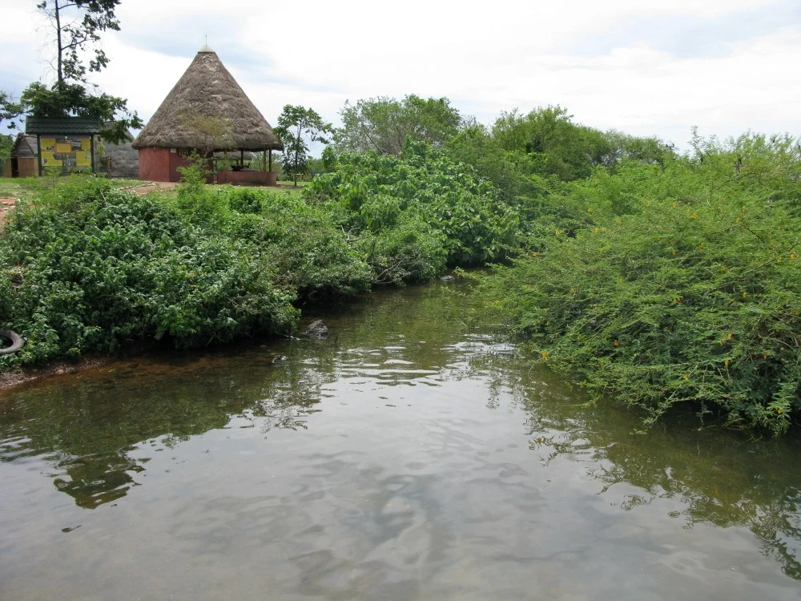

Ngamba Island creates a different kind of primate experience from a forest trek. The setting on Lake Victoria is beautiful, but the emotional force of the visit comes from knowing the chimpanzees are there because they needed protection. Rescue and rehabilitation give the encounter weight before you even begin observing them.
That sense of purpose changes the mood. Visitors are not simply watching animals in a scenic place. They are entering a conservation space where care, education, and long-term commitment shape everything around the experience. The chimps remain lively and compelling, but the story is larger than spectacle.
For many travelers, that makes Ngamba both moving and memorable. It is one of those visits where beauty and responsibility meet clearly.
Why The Island Setting Matters
Lake Victoria gives Ngamba a calm frame that suits the sanctuary's reflective tone. The journey by water helps visitors shift into a slower mindset before arrival, and the island setting makes the visit feel distinct from city or mainland stops nearby.
That transition prepares people to engage with the site more thoughtfully.
Conservation You Can Understand Quickly
Not every conservation story is easy to grasp in person. Ngamba makes its purpose visible. Visitors can see how rescue, shelter, and education work together, and that clarity makes the experience meaningful even for people with no specialist background in wildlife care.
It is an excellent stop for travelers who want their trip to include more than recreation.
Why Ngamba Adds Depth To A Lake Victoria Itinerary
Lake Victoria routes often lean toward relaxation or scenery. Ngamba adds another layer entirely: ethics, empathy, and a closer understanding of Uganda's conservation work. It broadens the emotional range of the journey.
For readers seeking travel with heart as well as beauty, Ngamba Island is a very strong choice.